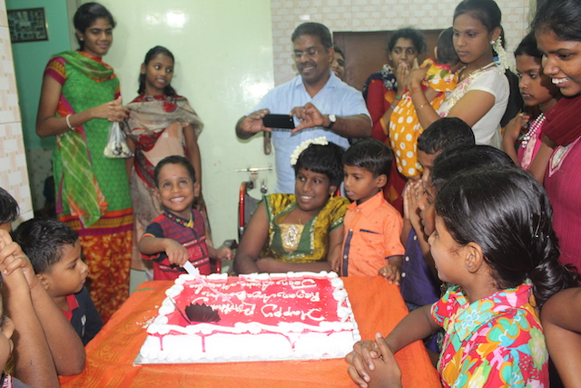

Infrastructure Milestone
From Thatched Roof to Concrete Haven
In our early days, children lived under a fragile thatched roof. Through relentless community effort, we constructed a safe, hygienic, earthquake-resilient concrete campus with sensory rooms, ramps, and medical wards in Gerugambakkam.